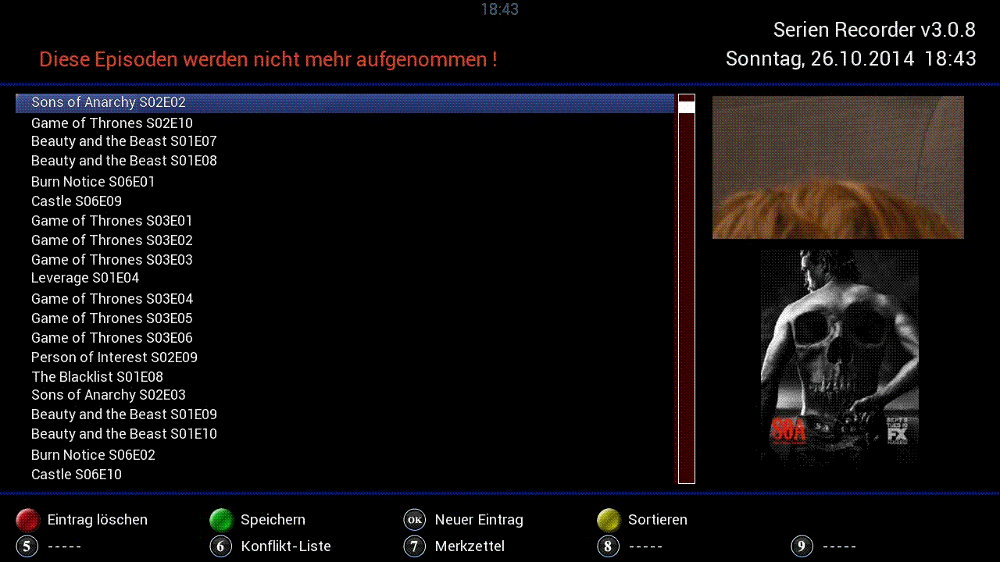
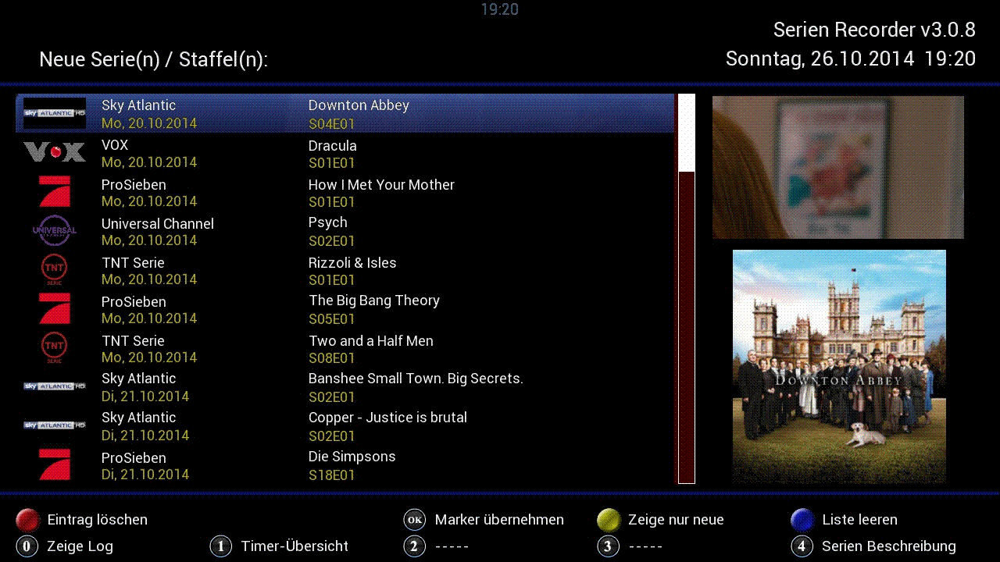

|
5 Die
Timer-Liste  
Die Timer-Liste enthält eine Liste ALLER
Timer, die vom SerienRecorder angelegt wurden. In der Regel
werden nur die Timer angezeigt, die noch ausstehen. Die alten
Timer lassen sich aber über die gelbe Taste ebenfalls anzeigen. Dabei werden die Timer, die bereits abgearbeitet wurden,
in der Liste abgehakt. Mit der grünen Taste lässt sich auswählen, in welcher Reihenfolge die Timer angezeigt werden (chronologisch auf- oder absteigend).

Fig.5.1: Die Timer-Liste
5.1
Die Bearbeitung der Timer-Liste   
Mit der roten
Taste lässt sich ein einzelner Timer löschen. Dabei wird
nicht nur der Eintrag aus der Datenbank entfernt, sondern der
Timer wird tatsächlich gelöscht. D.h. diese Aufnahme wird
nicht durchgeführt.
Mit der blauen Taste lassen sich ALLE bereits abgelaufenen Timer aus der Datenbank löschen. Achtung:
Durch das Löschen aller alten Eintrage, kann der SerienRecorder
nicht mehr feststellen welche Folgen bereits aufgenommen wurden. Das
hat zur Folge, dass der SerienRecorder für all die alten Folgen
wieder Timer erstellt, so als ob diese noch nie aufgenommen wurden.
Die Taste 1 öffnet eine Übersicht aller Timer,
die vom SerienRecorder angelegt wurden, also im Prinzip die selbe Liste
wie oben beschrieben, allerdings in einer Kurzform um einerseits mehr
Einträge auf einer Seite anzeigen zu können, andererseits
erlaubt diese Ansicht eine alphabetische Sortierung (gelbe Taste).

Fig.5.2: Timer-Übersicht
Auch hier lassen sich einzelne Einträge mit der roten
Taste löschen, allerdings werden hier nur die Einträge
aus der Datenbank gelöscht - eventuell noch vorhandene Timer
bleiben unangetastet, die Aufnahmen werden ausgeführt.
Ausserdem hat man hier die Möglichkeit, durch Drücken der OK
Taste selbst Einträge vorzunehmen. Das macht dann Sinn, wenn man
bereits
Folgen einer Serie gesehen hat, bevor man den SerienRecorder mit der
Timererstellung beauftragt. Nach Auswählen der Serie (ein
entsprechender Marker muss vorhanden sein) werden der Reihe nach
Staffel, von Episode, bis Episode über die virtuelle Tastatur
eingegeben. Soll nur eine einzelne Folge hizugefügt werden, so ist
bei „von Episode“ und „bis Episode“ das gleiche einzugeben (z.B. von 15 bis 15).
Im Anschluss sind die Änderungen (Löschen, Hinzufügen) mit der grünen Taste zu speichern.
5.2
Der Merkzettel 
Hier lassen sich Episoden zur Aufnahme
vormerken. Der SerienRecorder legt dann dafür Timer an, unabhängig davon, ob
die Staffel erlaubt ist oder nicht. Die Eingabe erfolgt genauso wie in der Timer-Übersicht (OK Taste, Serie auswählen, Staffel, von Episode, bis Episode eingeben).
5.3 Die
Serien-/Staffel-Start-Liste 
Über die Taste 3
kann man sich
die neuesten Serienstarts ansehen. Es werden alle Serien angezeigt,
bei denen in den nächsten Tagen eine neue Staffel beginnt, oder
die
allererste Folge ausgestrahlt wird. Es können auch Serien
angezeigt werden, bei denen erst kürzlich eine neue Staffel
begonnen hat. Die Zeitspanne für diesen Rückblick kann in den
globalen Einstellungen
(Aktion bei neuer Serie/Staffel -> Einträge löschen
die älter sind als X Tage) angegeben werden. Diese Liste wird
bei jedem Suchlauf (Auto-Check) aktualisiert.

Fig.5.3: Staffelstart-Ansicht
Mit den Farbtasten
kann man auch hier einzelne Einträge löschen, die Liste
leeren, bzw. die Anzeige der vergangenen Staffelstarts ein- oder
ausschalten.
Durch Drücken der OK Taste wird die ausgewählte Serien zu den Serien-Markern hinzugefügt.
5.4
Die Konflikt-Liste 
In der Konflikte-Liste
werden die
Episoden angezeigt, für die aufgrund eines Konfliktes mit anderen
Timern (oder belegten Tunern), kein aktiver Timer erstellt werden
konnte. In diesem Fall wird zwar ein Timer erstellt, der allerdings
deaktiviert ist. Somit können dieser, bzw. die anderen an dem
Konflikt beteiligten Timer manuell bearbeitet werden, um die Aufnahme
eventuell dennoch durchführen zu können.
Dieser Fall
kommt in der Regel recht selten vor, weil der Algorithmus des
SerienRecorders sehr gut darin ist, Konflikte zu vermeiden, indem er
einfach die Wiederholung aufnimmt, falls die Tuner zur
Erstaustrahlungszeit bereits belegt sind.
|